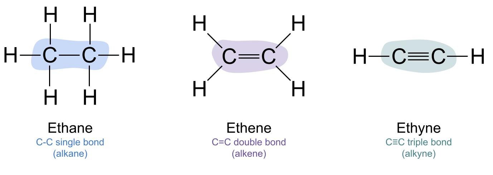

ไฮโดรคาร์บอนและประเภทของไฮโดรคาร์บอน
ไฮโดรคาร์บอน (Hydrocarbon) เป็นสารประกอบอินทรีย์ที่ประกอบด้วยธาตุคาร์บอนและไฮโดรเจนเพียงสองชนิดเท่านั้น เป็นสารพื้นฐานที่สำคัญในเคมีอินทรีย์ และพบได้มากในปิโตรเลียม ก๊าซธรรมชาติ และน้ำมันเชื้อเพลิง ไฮโดรคาร์บอนสามารถแบ่งประเภทตามชนิดของพันธะและโครงสร้างได้หลายประเภท ดังนี้
1. แอลเคน (Alkane) เป็นไฮโดรคาร์บอนที่มีพันธะเดี่ยวระหว่างอะตอมคาร์บอนทั้งหมด จัดเป็นสารไฮโดรคาร์บอนอิ่มตัว ตัวอย่างเช่น มีเทน (CH₄) อีเทน (C₂H₆) และโพรเพน (C₃H₈) มักพบในก๊าซธรรมชาติและใช้เป็นเชื้อเพลิง
2. แอลคีน (Alkene) เป็นไฮโดรคาร์บอนที่มีพันธะคู่ระหว่างอะตอมคาร์บอนอย่างน้อยหนึ่งพันธะ ตัวอย่างเช่น เอทีน (C₂H₄) ซึ่งใช้เป็นวัตถุดิบในการผลิตพลาสติกประเภทพอลิเอทิลีน
3. แอลไคน์ (Alkyne) เป็นไฮโดรคาร์บอนที่มีพันธะสามระหว่างอะตอมคาร์บอนอย่างน้อยหนึ่งพันธะ ตัวอย่างเช่น เอไทน์ (C₂H₂) หรืออะเซทิลีน ซึ่งนำไปใช้ในงานเชื่อมและตัดโลหะบางประเภท
4. อะโรมาติกไฮโดรคาร์บอน (Aromatic Hydrocarbon) เป็นสารประกอบที่มีโครงสร้างวงแหวนและระบบอิเล็กตรอนที่มีความเสถียร ตัวอย่างเช่น เบนซีน (C₆H₆) ซึ่งใช้เป็นวัตถุดิบในอุตสาหกรรมเคมี
ไฮโดรคาร์บอนมีประโยชน์ต่อการผลิตพลังงานและสารเคมี แต่การเผาไหม้เชื้อเพลิงฟอสซิลอาจก่อให้เกิดก๊าซคาร์บอนไดออกไซด์และมลพิษทางอากาศ จึงควรใช้พลังงานอย่างเหมาะสมและคำนึงถึงผลกระทบต่อสิ่งแวดล้อม